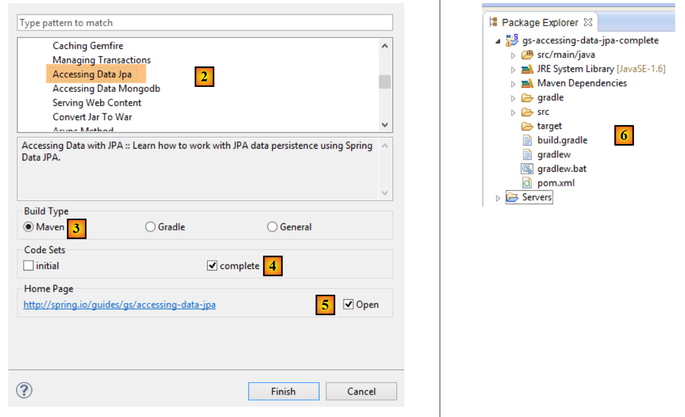
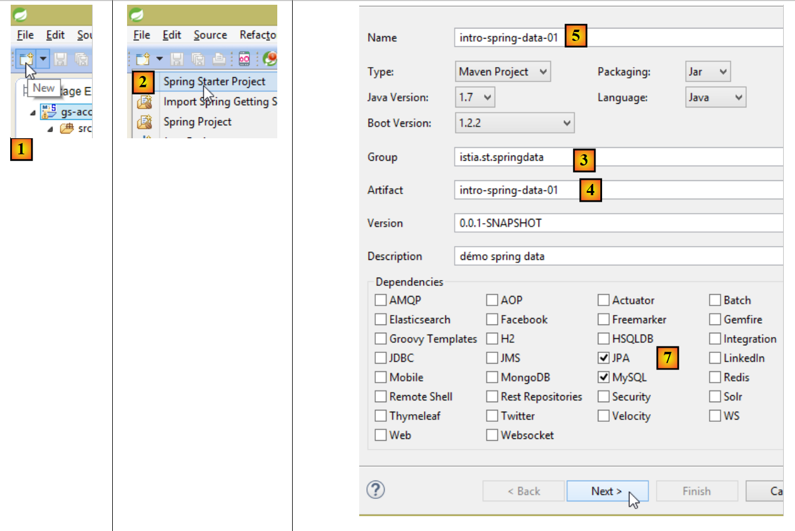
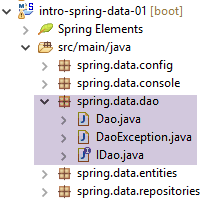

11. [Curso]: Gestão de bases de dados relacionais com Spring Data
Palavras-chave: arquitetura multicamadas, Spring, injeção de dependências, JPA (Java Persistence API), Spring Data.
Iremos implementar a camada [DAO] do trabalho utilizando o [Spring Data], um componente do ecossistema Spring. O [Spring Data] baseia-se numa camada JPA (Java Persistence API) que permite à camada [DAO] manipular objetos em vez de instruções SQL. Em última análise, a camada [DAO] não tem conhecimento de que está a interagir com uma base de dados. Conhece apenas a interface da camada [Spring Data].
 |
Vamos primeiro explorar o [Spring Data] através de dois exemplos.
11.1. Suporte
 |
- Em [1], a pasta [support / chap-11] contém três projetos Eclipse;
- em [2], o script SQL para criar a base de dados de exemplo para este capítulo;
11.2. Exemplo 1
O site da Spring oferece vários tutoriais para começar a utilizar a Spring [http://spring.io/guides]. Iremos utilizar um deles para apresentar o Spring Data. Para tal, iremos utilizar o Spring Tool Suite (STS).
 |
- Em [1], importamos um dos tutoriais de [spring.io/guides];
 |
- Em [2], selecionamos o tutorial [Acesso a dados JPA], que demonstra como aceder a uma base de dados utilizando o Spring Data;
- Em [3], selecionamos um projeto configurado pelo Maven;
- em [4], o tutorial está disponível em duas formas: [initial], que é uma versão vazia que preenche seguindo o tutorial, ou [complete], que é a versão final do tutorial. Escolhemos a última;
- Em [5], pode optar por visualizar o tutorial num navegador;
- Em [6], o projeto final.
11.2.1. A configuração Maven do projeto
As dependências Maven do projeto estão configuradas no ficheiro [pom.xml]:
<groupId>org.springframework</groupId>
<artifactId>gs-accessing-data-jpa</artifactId>
<version>0.1.0</version>
<parent>
<groupId>org.springframework.boot</groupId>
<artifactId>spring-boot-starter-parent</artifactId>
<version>1.1.10.RELEASE</version>
</parent>
<dependencies>
<dependency>
<groupId>org.springframework.boot</groupId>
<artifactId>spring-boot-starter-data-jpa</artifactId>
</dependency>
<dependency>
<groupId>com.h2database</groupId>
<artifactId>h2</artifactId>
</dependency>
</dependencies>
<properties>
<!-- use UTF-8 for everything -->
<project.build.sourceEncoding>UTF-8</project.build.sourceEncoding>
<project.reporting.outputEncoding>UTF-8</project.reporting.outputEncoding>
<start-class>hello.Application</start-class>
</properties>
- linhas 5–9: definem um projeto Maven pai. Este projeto define a maioria das dependências do projeto. Estas podem ser suficientes, caso em que não são adicionadas dependências adicionais, ou podem não ser, caso em que as dependências em falta são adicionadas;
- linhas 12–15: definem uma dependência do [spring-boot-starter-data-jpa]. Este artefacto contém as classes Spring Data;
- Linhas 16–19: definem uma dependência do SGBD H2, que permite criar e gerir bases de dados na memória.
Vejamos as classes fornecidas por estas dependências:
 |  |  |
São muitas:
- algumas pertencem ao ecossistema Spring (aquelas que começam por spring);
- outros pertencem ao ecossistema Hibernate (hibernate, jboss), cuja implementação JPA estamos a utilizar aqui;
- outras são bibliotecas de testes (junit, hamcrest);
- outras são bibliotecas de registo (log4j, logback, slf4j);
Vamos mantê-las todas. Para uma aplicação de produção, apenas as necessárias devem ser mantidas.
Na linha 26 do ficheiro [pom.xml], encontramos a linha:
<start-class>hello.Application</start-class>
Esta linha está ligada às seguintes linhas:
<build>
<plugins>
<plugin>
<artifactId>maven-compiler-plugin</artifactId>
</plugin>
<plugin>
<groupId>org.springframework.boot</groupId>
<artifactId>spring-boot-maven-plugin</artifactId>
</plugin>
</plugins>
</build>
Linhas 6–9: O [spring-boot-maven-plugin] permite gerar o JAR executável da aplicação. A linha 26 do ficheiro [pom.xml] especifica então a classe executável deste JAR.
11.2.2. A camada [JPA]
O acesso à base de dados é tratado através de uma camada [JPA], a Java Persistence API:
 |
 |
A aplicação é básica e gere entidades [Cliente]. A classe [Cliente] faz parte da camada [JPA] e é a seguinte:
package hello;
import javax.persistence.Entity;
import javax.persistence.GeneratedValue;
import javax.persistence.GenerationType;
import javax.persistence.Id;
@Entity
public class Customer {
@Id
@GeneratedValue(strategy = GenerationType.AUTO)
private long id;
private String firstName;
private String lastName;
protected Customer() {
}
public Customer(String firstName, String lastName) {
this.firstName = firstName;
this.lastName = lastName;
}
@Override
public String toString() {
return String.format("Customer[id=%d, firstName='%s', lastName='%s']", id, firstName, lastName);
}
}
Um cliente tem um ID [id], um nome próprio [firstName] e um apelido [lastName]. Cada instância [Customer] representa uma linha numa tabela de base de dados.
- linha 8: Anotação JPA que garante que a persistência das instâncias [Customer] (Criar, Ler, Atualizar, Eliminar) será gerida por uma implementação JPA. Com base nas dependências do Maven, podemos ver que está a ser utilizada a implementação JPA/Hibernate;
- Linhas 11–12: Anotações JPA que associam o campo [id] à chave primária da tabela [Customer]. A linha 12 indica que a implementação JPA utilizará o método de geração de chave primária específico do SGBD em uso, neste caso o H2;
Não existem outras anotações JPA. Serão, portanto, utilizados valores por defeito:
- a tabela [Customer] receberá o nome da classe, ou seja, [Customer];
- as colunas desta tabela receberão nomes baseados nos campos da classe: [id, firstName, lastName], observando-se que as maiúsculas e minúsculas não são levadas em conta nos nomes das colunas da tabela;
Note-se que a implementação JPA utilizada nunca é nomeada.
11.2.3. A camada [Spring Data]
A classe [CustomerRepository] implementa a camada de acesso para a tabela [Customer]. O seu código é o seguinte:
 |
 |
package hello;
import java.util.List;
import org.springframework.data.repository.CrudRepository;
public interface CustomerRepository extends CrudRepository<Customer, Long> {
List<Customer> findByLastName(String lastName);
}
Trata-se, portanto, de uma interface e não de uma classe (linha 7). Ela estende a interface [CrudRepository], uma interface do Spring Data (linha 5). Esta interface é parametrizada por dois tipos: o primeiro é o tipo dos elementos geridos, neste caso o tipo [Customer]; o segundo é o tipo da chave primária dos elementos geridos, neste caso um tipo [Long]. A interface [CrudRepository] é a seguinte:
package org.springframework.data.repository;
import java.io.Serializable;
@NoRepositoryBean
public interface CrudRepository<T, ID extends Serializable> extends Repository<T, ID> {
<S extends T> S save(S entity);
<S extends T> Iterable<S> save(Iterable<S> entities);
T findOne(ID id);
boolean exists(ID id);
Iterable<T> findAll();
Iterable<T> findAll(Iterable<ID> ids);
long count();
void delete(ID id);
void delete(T entity);
void delete(Iterable<? extends T> entities);
void deleteAll();
}
Esta interface define as operações CRUD (Criar – Ler – Atualizar – Eliminar) que podem ser realizadas num tipo JPA T:
- linha 8: o método save permite que uma entidade T seja persistida na base de dados. Ele persiste a entidade utilizando a chave primária que lhe foi atribuída pelo SGBD. Também permite que uma entidade T identificada pela sua chave primária id seja atualizada. A escolha entre estas duas ações depende do valor da chave primária id: se for nulo, ocorre a operação de persistência; caso contrário, ocorre a operação de atualização;
- linha 10: igual ao acima, mas para uma lista de entidades;
- linha 12: o método findOne recupera uma entidade T identificada pela sua chave primária id;
- linha 22: o método delete permite eliminar uma entidade T identificada pela sua chave primária id;
- linhas 24–28: variações do método [delete];
- linha 16: o método [findAll] recupera todas as entidades T persistidas;
- linha 18: igual ao anterior, mas limitado às entidades para as quais foi fornecida uma lista de identificadores;
Voltemos à interface [CustomerRepository]:
package hello;
import java.util.List;
import org.springframework.data.repository.CrudRepository;
public interface CustomerRepository extends CrudRepository<Customer, Long> {
List<Customer> findByLastName(String lastName);
}
- A linha 9 permite-lhe recuperar um [Cliente] pelo seu [apelido];
E é tudo quanto à camada [DAO]. Não existe uma classe de implementação para a interface anterior. Esta é gerada em tempo de execução pelo [Spring Data]. Os métodos da interface [CrudRepository] são implementados automaticamente. Quanto aos métodos adicionados à interface [CustomerRepository], depende. Voltemos à definição de [Customer]:
private long id;
private String firstName;
private String lastName;
O método na linha 9 é implementado automaticamente pelo [Spring Data] porque faz referência ao campo [lastName] (linha 3) de [Customer]. Quando encontra um método [findBySomething] na interface a ser implementada, o Spring Data implementa-o utilizando a seguinte consulta JPQL (Java Persistence Query Language):
Portanto, o tipo T deve ter um campo chamado [alguma coisa]. Assim, o método
será implementado com código semelhante ao seguinte:
return [em].createQuery("select c from Customer c where c.lastName=:value").setParameter("value",lastName).getResultList()
onde [em] se refere ao contexto de persistência JPA. Isto só é possível se a classe [Customer] tiver um campo chamado [lastName], o que é o caso.
Em conclusão, em casos simples, o Spring Data permite-nos implementar a camada [DAO] com uma interface simples.
11.2.4. A camada [console]
 |
 |
A classe [Application] é a seguinte:
package hello;
import org.springframework.beans.factory.annotation.Autowired;
import org.springframework.boot.CommandLineRunner;
import org.springframework.boot.SpringApplication;
import org.springframework.boot.autoconfigure.SpringBootApplication;
@SpringBootApplication
public class Application implements CommandLineRunner {
@Autowired
CustomerRepository repository;
public static void main(String[] args) {
SpringApplication.run(Application.class);
}
@Override
public void run(String... strings) throws Exception {
// save a couple of customers
repository.save(new Customer("Jack", "Bauer"));
repository.save(new Customer("Chloe", "O'Brian"));
repository.save(new Customer("Kim", "Bauer"));
repository.save(new Customer("David", "Palmer"));
repository.save(new Customer("Michelle", "Dessler"));
// fetch all customers
System.out.println("Customers found with findAll():");
System.out.println("-------------------------------");
for (Customer customer : repository.findAll()) {
System.out.println(customer);
}
System.out.println();
// fetch an individual customer by ID
Customer customer = repository.findOne(1L);
System.out.println("Customer found with findOne(1L):");
System.out.println("--------------------------------");
System.out.println(customer);
System.out.println();
// fetch customers by last name
System.out.println("Customer found with findByLastName('Bauer'):");
System.out.println("--------------------------------------------");
for (Customer bauer : repository.findByLastName("Bauer")) {
System.out.println(bauer);
}
}
}
- linha 9: a classe implementa a interface [CommandLineRunner], que é uma interface [Spring Boot] (linha 4). Esta interface tem apenas um método, o que se encontra na linha 19;
- linha 8: @SpringBootApplication é uma anotação que agrupa várias anotações [Spring Boot]:
- @Configuration: indica que a classe é uma classe de configuração;
- @EnableAutoConfiguration: instrui o [Spring Boot] a criar automaticamente vários beans com base em diversas propriedades, particularmente o conteúdo do classpath do projeto. Como as bibliotecas do Hibernate estão no Classpath, o bean [entityManagerFactory] será implementado utilizando o Hibernate. Como a biblioteca do SGBD H2 está no Classpath, o bean [dataSource] será implementado utilizando o H2. No bean [dataSource], devemos também definir o nome de utilizador e a palavra-passe. Aqui, o Spring Boot utilizará o administrador H2 predefinido, que não tem palavra-passe. Como a biblioteca [spring-tx] está no Classpath, será utilizado o gestor de transações do Spring;
- @EnableWebMvc: se a biblioteca [spring-mvc] estiver no Classpath. Neste caso, é realizada a configuração automática para a aplicação web;
- @ComponentScan: que indica ao Spring onde procurar outros beans, configurações e serviços. Aqui, estes são procurados por predefinição no pacote que contém a classe anotada, ou seja, o pacote [hello]. Assim, as classes [Customer] e [CustomerRepository] serão encontradas. Como a primeira tem a anotação [@Entity], será catalogada como uma entidade a ser gerida pelo Hibernate. Como a segunda estende a interface [CrudRepository], será registada como um bean do Spring;
- linhas 11–12: o bean [CustomerRepository] é injetado no código da classe principal;
- linha 15: o método estático [run] da classe [SpringApplication] do projeto Spring Boot é executado. O seu parâmetro é a classe que possui uma anotação [Configuration] ou [EnableAutoConfiguration]. Tudo o que foi explicado anteriormente irá então ocorrer. O resultado é um contexto de aplicação Spring, ou seja, um conjunto de beans geridos pelo Spring;
As operações a seguir utilizam simplesmente os métodos do bean que implementa a interface [CustomerRepository]. A saída da consola é a seguinte:
- Linhas 1-8: o logótipo do projeto Spring Boot;
- linha 9: a classe [hello.Application] é executada;
- linha 10: [AnnotationConfigApplicationContext] é uma classe que implementa a interface [ApplicationContext] do Spring. É um contentor de beans;
- linha 11: o bean [entityManagerFactory] é implementado utilizando a classe [LocalContainerEntityManagerFactory], uma classe do Spring;
- linha 12: aparece [Hibernate]. Esta é a implementação JPA que foi escolhida;
- linha 19: um dialeto Hibernate é a variante SQL a ser utilizada com o SGBD. Aqui, o dialeto [H2Dialect] indica que o Hibernate irá funcionar com o SGBD H2;
- linhas 21–22: a base de dados é criada. A tabela [CUSTOMER] é criada. Isto significa que o Hibernate foi configurado para gerar tabelas a partir de definições JPA, neste caso a definição JPA da classe [Customer];
- linhas 26–30: resultado do método [findAll] da interface;
- linha 34: resultado do método [findOne] da interface;
- linhas 38–39: resultados do método [findByLastName];
- linhas 41 e seguintes: registos do encerramento do contexto Spring.
11.2.5. Configuração manual do projeto Spring Data
Duplicamos o projeto anterior para o projeto [gs-accessing-data-jpa-02]:
 |
Neste novo projeto, não vamos utilizar a configuração automática fornecida pelo Spring Boot. Vamos configurá-lo manualmente. Isto pode ser útil se as configurações padrão não se adequarem às nossas necessidades.
Primeiro, vamos especificar as dependências necessárias no ficheiro [pom.xml]:
<?xml version="1.0" encoding="UTF-8"?>
<project xmlns="http://maven.apache.org/POM/4.0.0" xsi:schemaLocation="http://maven.apache.org/POM/4.0.0 http://maven.apache.org/maven-v4_0_0.xsd"
xmlns:xsi="http://www.w3.org/2001/XMLSchema-instance">
<modelVersion>4.0.0</modelVersion>
<groupId>org.springframework</groupId>
<artifactId>gs-accessing-data-jpa-02</artifactId>
<version>0.1.0</version>
<parent>
<groupId>org.springframework.boot</groupId>
<artifactId>spring-boot-starter-parent</artifactId>
<version>1.2.7.RELEASE</version>
</parent>
<dependencies>
<!-- Spring Data -->
<dependency>
<groupId>org.springframework.data</groupId>
<artifactId>spring-data-jpa</artifactId>
</dependency>
<!-- Hibernate -->
<dependency>
<groupId>org.hibernate</groupId>
<artifactId>hibernate-entitymanager</artifactId>
</dependency>
<!-- H2 Database -->
<dependency>
<groupId>com.h2database</groupId>
<artifactId>h2</artifactId>
</dependency>
<!-- Tomcat JDBC -->
<dependency>
<groupId>org.apache.tomcat</groupId>
<artifactId>tomcat-jdbc</artifactId>
</dependency>
</dependencies>
<properties>
<!-- use UTF-8 for everything -->
<project.build.sourceEncoding>UTF-8</project.build.sourceEncoding>
<project.reporting.outputEncoding>UTF-8</project.reporting.outputEncoding>
</properties>
<build>
<plugins>
<plugin>
<groupId>org.springframework.boot</groupId>
<artifactId>spring-boot-maven-plugin</artifactId>
</plugin>
</plugins>
</build>
<repositories>
<repository>
<id>spring-releases</id>
<name>Spring Releases</name>
<url>https://repo.spring.io/libs-release</url>
</repository>
<repository>
<id>org.jboss.repository.releases</id>
<name>JBoss Maven Release Repository</name>
<url>https://repository.jboss.org/nexus/content/repositories/releases</url>
</repository>
</repositories>
<pluginRepositories>
<pluginRepository>
<id>spring-releases</id>
<name>Spring Releases</name>
<url>https://repo.spring.io/libs-release</url>
</pluginRepository>
</pluginRepositories>
</project>
- linhas 10–14: o projeto Maven pai cujas bibliotecas iremos utilizar;
- linhas 18–21: Spring Data utilizado para aceder à base de dados;
- linhas 23–26: a implementação do Hibernate da especificação JPA;
- linhas 28–31: o SGBD H2;
- linhas 33–36: as bases de dados são frequentemente utilizadas com pools de ligações, o que evita a abertura e o encerramento repetidos de ligações. Aqui, a implementação utilizada é [tomcat-jdbc];
No novo projeto, a entidade [Customer] e a interface [CustomerRepository] permanecem inalteradas. Iremos modificar a classe [Application], que será dividida em duas classes:
- [Config], que será a classe de configuração;
- [Main], que será a classe executável;
 |
A classe executável [Application] fica agora da seguinte forma:
package console;
import org.springframework.context.annotation.AnnotationConfigApplicationContext;
import repositories.CustomerRepository;
import config.AppConfig;
import entities.Customer;
public class Application {
public static void main(String[] args) {
// instantiation Spring context
AnnotationConfigApplicationContext context = new AnnotationConfigApplicationContext(AppConfig.class);
CustomerRepository repository = context.getBean(CustomerRepository.class);
// save a couple of customers
repository.save(new Customer("Jack", "Bauer"));
repository.save(new Customer("Chloe", "O'Brian"));
repository.save(new Customer("Kim", "Bauer"));
repository.save(new Customer("David", "Palmer"));
repository.save(new Customer("Michelle", "Dessler"));
...
// closing context
context.close();
}
}
- linha 9: a classe [Application] já não tem quaisquer anotações de configuração;
- linhas 3–7: Note que já não existem importações do pacote [Spring Boot];
- linha 12: Instanciamos os beans Spring. Obtemos o contexto Spring, que contém referências aos beans criados;
- linha 13: solicitamos uma referência ao bean [CustomerRepository];
A classe [ Config] que configura o projeto é a seguinte:
package config;
import javax.persistence.EntityManagerFactory;
import org.apache.tomcat.jdbc.pool.DataSource;
import org.springframework.context.annotation.Bean;
import org.springframework.context.annotation.Configuration;
import org.springframework.data.jpa.repository.config.EnableJpaRepositories;
import org.springframework.orm.jpa.JpaTransactionManager;
import org.springframework.orm.jpa.JpaVendorAdapter;
import org.springframework.orm.jpa.LocalContainerEntityManagerFactoryBean;
import org.springframework.orm.jpa.vendor.Database;
import org.springframework.orm.jpa.vendor.HibernateJpaVendorAdapter;
import org.springframework.transaction.PlatformTransactionManager;
import org.springframework.transaction.annotation.EnableTransactionManagement;
//@EnableTransactionManagement
@EnableJpaRepositories(basePackages = { "repositories" })
@Configuration
// @ComponentScan(basePackages={"package1","package2"})
public class AppConfig {
// h2 database
@Bean
public DataSource dataSource() {
// data source TomcatJdbc
DataSource dataSource = new DataSource();
// configuration access JDBC
dataSource.setDriverClassName("org.h2.Driver");
dataSource.setUrl("jdbc:h2:./demo");
dataSource.setUsername("sa");
dataSource.setPassword("");
// an initially open connection
dataSource.setInitialSize(1);
// result
return dataSource;
}
// the provider JPA
@Bean
public JpaVendorAdapter jpaVendorAdapter() {
HibernateJpaVendorAdapter hibernateJpaVendorAdapter = new HibernateJpaVendorAdapter();
hibernateJpaVendorAdapter.setShowSql(false);
hibernateJpaVendorAdapter.setGenerateDdl(true);
hibernateJpaVendorAdapter.setDatabase(Database.H2);
return hibernateJpaVendorAdapter;
}
// EntityManagerFactory
@Bean
public EntityManagerFactory entityManagerFactory(JpaVendorAdapter jpaVendorAdapter, DataSource dataSource) {
LocalContainerEntityManagerFactoryBean factory = new LocalContainerEntityManagerFactoryBean();
factory.setJpaVendorAdapter(jpaVendorAdapter);
factory.setPackagesToScan("entities");
factory.setDataSource(dataSource);
factory.afterPropertiesSet();
return factory.getObject();
}
// Transaction manager
@Bean
public PlatformTransactionManager transactionManager(EntityManagerFactory entityManagerFactory) {
JpaTransactionManager txManager = new JpaTransactionManager();
txManager.setEntityManagerFactory(entityManagerFactory);
return txManager;
}
}
- linha 17: a anotação [@EnableTransactionManagement] indica que os métodos das interfaces [CrudRepository] devem ser executados dentro de uma transação. Foi comentada porque este é o comportamento padrão;
- linha 18: a anotação [@EnableJpaRepositories] especifica os diretórios onde se encontram as interfaces [CrudRepository] do Spring Data. Estas interfaces tornar-se-ão componentes Spring e estarão disponíveis no contexto Spring;
- linha 19: a anotação [@Configuration] torna a classe [Config] uma classe de configuração do Spring;
- linha 20: a anotação [@ComponentScan] lista os diretórios onde os componentes Spring devem ser procurados. Os componentes Spring são classes anotadas com anotações Spring, tais como @Service, @Component, @Controller, etc. Aqui, não há outros além daqueles definidos na classe [AppConfig], pelo que a anotação foi comentada;
- linhas 24–37: definem a fonte de dados, a base de dados H2. É a anotação @Bean na linha 25 que torna o objeto criado por este método um componente gerido pelo Spring. O nome do método aqui pode ser qualquer um. No entanto, deve ser nomeado [dataSource] se o EntityManagerFactory na linha 51 estiver ausente e for definido através da configuração automática;
- linha 30: a base de dados será denominada [demo] e será gerada na pasta do projeto;
- Linhas 40–47: definem a implementação JPA utilizada, neste caso uma implementação Hibernate. O nome do método pode ser qualquer um aqui;
- linha 43: sem registos SQL;
- linha 44: a base de dados será criada se não existir;
- linhas 50–58: definem o EntityManagerFactory que irá gerir a persistência JPA. O método deve ser denominado [entityManagerFactory];
- linha 51: o método recebe dois parâmetros dos tipos dos dois beans definidos anteriormente. Estes serão então construídos e injetados pelo Spring como parâmetros do método;
- linha 53: define a implementação JPA a ser utilizada;
- linha 54: especifica os diretórios onde as entidades JPA podem ser encontradas;
- linha 55: define a fonte de dados a ser gerida;
- linhas 61–66: o gestor de transações. O método deve ser denominado [transactionManager]. Recebe o bean das linhas 51–58 como parâmetro;
- linha 64: o gestor de transações é associado ao EntityManagerFactory;
Os métodos anteriores podem ser definidos em qualquer ordem.
A execução do projeto produz os mesmos resultados. Um novo ficheiro aparece na pasta do projeto, o ficheiro da base de dados H2:
 |
11.2.6. Criação de um arquivo executável
Para criar um arquivo executável do projeto, proceda da seguinte forma:
 |
- em [1]: crie uma configuração de tempo de execução;
- em [2]: do tipo [Aplicação Java]
- em [3]: especifique o projeto a executar (utilize o botão Procurar);
- em [4]: especifique a classe a ser executada;
- em [5]: o nome da configuração de execução — pode ser qualquer nome;
 |
- em [6]: exportar o projeto;
- em [7]: como um arquivo JAR executável;
- em [8]: especifique o caminho e o nome do ficheiro executável a ser criado;
- em [9]: o nome da configuração de tempo de execução criada em [5];
 |
- em [10], o arquivo criado;
Depois de fazer isso, abra um terminal na pasta que contém o arquivo executável:
O arquivo é executado da seguinte forma:
.....\dist>java -jar gs-accessing-data-jpa-02.jar
Os resultados apresentados na consola são os seguintes:
11.3. Exemplo 2
11.3.1. Introdução
Vamos revisitar o exemplo da tabela de produtos que utilizámos para apresentar a API JDBC e criar a seguinte arquitetura:
 |
A base de dados [dbintrospringjpa] tem duas tabelas: [PRODUCTS] e [CATEGORIES]. A tabela [CATEGORIES] é a seguinte:
 |
- [ID]: chave primária no modo AUTO_INCREMENT;
- [VERSION]: número da versão do registo;
- [NAME]: nome da categoria - único;
A tabela [PRODUCTS] é a seguinte:
 |
- [ID]: chave primária no modo AUTO_INCREMENT;
- [VERSION]: número da versão do registo;
- [NAME]: nome do produto - único;
- [CATEGORY_ID]: ID da categoria - chave estrangeira no campo [CATEGORIES.ID];
- [PRICE]: o seu preço;
- [DESCRIPTION]: uma descrição do produto;
Tarefa: Crie a base de dados [dbintrospringdata] utilizando o script SQL [dbintrospringdata.sql] dos materiais de apoio:
11.3.2. Criação do projeto Maven
Para criar um modelo de projeto Spring Data, siga estes passos:
 |
- Em [1], crie um novo projeto;
- Em [2], selecione o tipo [Spring Starter Project];
- O projeto gerado será um projeto Maven. Em [3], especifique o nome do grupo do projeto;
- Em [4], especifique o nome do artefacto (um ficheiro JAR, neste caso) que será criado quando o projeto for compilado;
- em [5]: o nome do projeto Eclipse – pode ser qualquer coisa (não tem de ser igual ao de [4]);
- em [7]: especifique que está a criar um projeto com uma camada [JPA] utilizando o SGBD MySQL. As dependências necessárias para tal projeto serão então incluídas no ficheiro [pom.xml];
 |
- em [8], introduza o nome da pasta do projeto;
- em [9], conclua o assistente;
 |
- em [10]: o projeto criado;
O ficheiro [pom.xml] inclui as dependências necessárias para um projeto JPA:
<?xml version="1.0" encoding="UTF-8"?>
<project xmlns="http://maven.apache.org/POM/4.0.0" xmlns:xsi="http://www.w3.org/2001/XMLSchema-instance"
xsi:schemaLocation="http://maven.apache.org/POM/4.0.0 http://maven.apache.org/xsd/maven-4.0.0.xsd">
<modelVersion>4.0.0</modelVersion>
<groupId>istia.st.springdata</groupId>
<artifactId>intro-spring-data-01</artifactId>
<version>0.0.1-SNAPSHOT</version>
<packaging>jar</packaging>
<name>intro-spring-data-01</name>
<description>démo spring data avec table de produits</description>
<parent>
<groupId>org.springframework.boot</groupId>
<artifactId>spring-boot-starter-parent</artifactId>
<version>1.2.2.RELEASE</version>
<relativePath/> <!-- lookup parent from repository -->
</parent>
<properties>
<project.build.sourceEncoding>UTF-8</project.build.sourceEncoding>
<start-class>demo.IntroSpringData01Application</start-class>
<java.version>1.7</java.version>
</properties>
<dependencies>
<dependency>
<groupId>org.springframework.boot</groupId>
<artifactId>spring-boot-starter-data-jpa</artifactId>
</dependency>
<dependency>
<groupId>mysql</groupId>
<artifactId>mysql-connector-java</artifactId>
<scope>runtime</scope>
</dependency>
<dependency>
<groupId>org.springframework.boot</groupId>
<artifactId>spring-boot-starter-test</artifactId>
<scope>test</scope>
</dependency>
</dependencies>
<build>
<plugins>
<plugin>
<groupId>org.springframework.boot</groupId>
<artifactId>spring-boot-maven-plugin</artifactId>
</plugin>
</plugins>
</build>
</project>
- linhas 14–19: o projeto Maven pai — define um grande número de bibliotecas com as respetivas versões — utilizamos estas bibliotecas como dependências do Maven sem especificar as suas versões;
- linhas 28–31: a dependência necessária para o JPA — incluirá [Spring Data];
- linhas 32–36: a dependência do controlador JDBC do MySQL;
- linhas 37–41: as dependências necessárias para os testes JUnit integrados com o Spring;
A classe executável [Application] não faz nada, mas está pré-configurada:
package demo;
import org.springframework.boot.SpringApplication;
import org.springframework.boot.autoconfigure.SpringBootApplication;
@SpringBootApplication
public class IntroSpringData01Application {
public static void main(String[] args) {
SpringApplication.run(IntroSpringData01Application.class, args);
}
}
- A anotação [@SpringBootApplication] torna a classe uma classe de configuração automática do projeto;
A classe de teste [ApplicationTests] não faz nada, mas está pré-configurada:
package demo;
import org.junit.Test;
import org.junit.runner.RunWith;
import org.springframework.boot.test.SpringApplicationConfiguration;
import org.springframework.test.context.junit4.SpringJUnit4ClassRunner;
@RunWith(SpringJUnit4ClassRunner.class)
@SpringApplicationConfiguration(classes = IntroSpringData01Application.class)
public class IntroSpringData01ApplicationTests {
@Test
public void contextLoads() {
}
}
- Linha 9: A anotação [@SpringApplicationConfiguration] permite que o ficheiro de configuração [Application] seja utilizado. A classe de teste irá, assim, beneficiar de todos os beans definidos neste ficheiro;
- linha 8: a anotação [@RunWith] permite a integração do Spring com o JUnit: a classe pode ser executada como um teste JUnit. [@RunWith] é uma anotação do JUnit (linha 4), enquanto a classe [SpringJUnit4ClassRunner] é uma classe do Spring (linha 6);
Agora que temos um esqueleto de aplicação JPA, podemos completá-lo para escrever o projeto da camada de persistência associado à base de dados do produto.
11.3.3. O projeto Eclipse
Vamos expandir o projeto anterior da seguinte forma:
 |
- [AppConfig.java]: a classe de configuração do projeto Spring;
- [Main.java]: a classe executável do projeto;
- [IDao.java]: a interface da camada [DAO];
- [Dao.java]: a classe de implementação da camada [DAO];
- [AbstractEntity.java]: a classe pai das classes [Product] e [Category];
- [Product.java]: classe associada a uma linha na tabela [PRODUCTS] na base de dados;
- [Category.java]: classe associada a uma linha na tabela [CATEGORIES] na base de dados;
- [ProductsRepository]: a interface Spring Data para aceder à tabela [PRODUCTS];
- [CategoriesRepository]: a interface Spring Data para aceder à tabela [CATEGORIES];
- [pom.xml]: o ficheiro de configuração do projeto Maven;
Este projeto implementa a seguinte arquitetura:
 |
A camada [DAO] apenas vê a camada implementada pelo [Spring Data].
11.3.4. Configuração do Maven
O ficheiro [pom.xml] para o projeto Maven é o seguinte:
<?xml version="1.0" encoding="UTF-8"?>
<project xmlns="http://maven.apache.org/POM/4.0.0" xmlns:xsi="http://www.w3.org/2001/XMLSchema-instance"
xsi:schemaLocation="http://maven.apache.org/POM/4.0.0 http://maven.apache.org/xsd/maven-4.0.0.xsd">
<modelVersion>4.0.0</modelVersion>
<groupId>istia.st.springdata</groupId>
<artifactId>intro-spring-data-01</artifactId>
<version>0.0.1-SNAPSHOT</version>
<packaging>jar</packaging>
<name>intro-spring-data-01</name>
<description>démo spring data avec table de produits</description>
<parent>
<groupId>org.springframework.boot</groupId>
<artifactId>spring-boot-starter-parent</artifactId>
<version>1.2.7.RELEASE</version>
</parent>
<dependencies>
<!-- Spring Data -->
<dependency>
<groupId>org.springframework.data</groupId>
<artifactId>spring-data-jpa</artifactId>
</dependency>
<!-- Hibernate -->
<dependency>
<groupId>org.hibernate</groupId>
<artifactId>hibernate-entitymanager</artifactId>
</dependency>
<!-- MySQL Database -->
<dependency>
<groupId>mysql</groupId>
<artifactId>mysql-connector-java</artifactId>
</dependency>
<!-- Tomcat JDBC -->
<dependency>
<groupId>org.apache.tomcat</groupId>
<artifactId>tomcat-jdbc</artifactId>
</dependency>
<!-- library jSON -->
<dependency>
<groupId>com.fasterxml.jackson.core</groupId>
<artifactId>jackson-core</artifactId>
</dependency>
<dependency>
<groupId>com.fasterxml.jackson.core</groupId>
<artifactId>jackson-databind</artifactId>
</dependency>
<!-- Google Guava -->
<dependency>
<groupId>com.google.guava</groupId>
<artifactId>guava</artifactId>
<version>16.0.1</version>
</dependency>
<!-- Spring Boot Test -->
<dependency>
<groupId>org.springframework.boot</groupId>
<artifactId>spring-boot-starter-test</artifactId>
<scope>test</scope>
</dependency>
<!-- Spring Boot -->
<dependency>
<groupId>org.springframework.boot</groupId>
<artifactId>spring-boot</artifactId>
<scope>test</scope>
</dependency>
<!-- log library -->
<dependency>
<groupId>org.springframework.boot</groupId>
<artifactId>spring-boot-starter-logging</artifactId>
</dependency>
</dependencies>
<properties>
<project.build.sourceEncoding>UTF-8</project.build.sourceEncoding>
<java.version>1.8</java.version>
</properties>
<build>
<plugins>
<plugin>
<groupId>org.apache.maven.plugins</groupId>
<artifactId>maven-surefire-plugin</artifactId>
<version>2.18.1</version>
</plugin>
</plugins>
</build>
</project>
Esta configuração é a utilizada e explicada na secção 11.2.5. Adicionamos as seguintes bibliotecas:
- linhas 42–49: uma biblioteca JSON utilizada pelo método [toString] da classe [Product];
- linhas 51–55: a biblioteca [Google Guava], que fornece métodos utilitários para gerir coleções de elementos. Será utilizada pela classe [Dao], que implementa a camada [DAO];
- linhas 56–67: as bibliotecas necessárias para testes JUnit;
- linhas 69–72: uma biblioteca de registo;
- linhas 81–86: os plugins Maven necessários para o projeto;
11.3.5. Entidades da camada [JPA]
Camada [DAO]Camada [Console]Camada [JPA]Driver [JDBC]Camada [Spring Data]Spring 4DBMS
 |
11.3.5.1. A classe [AbstractEntity]
A classe [AbstractEntity] é a seguinte:
package spring.data.entities;
import javax.persistence.Column;
import javax.persistence.GeneratedValue;
import javax.persistence.GenerationType;
import javax.persistence.Id;
import javax.persistence.MappedSuperclass;
import javax.persistence.Version;
import com.fasterxml.jackson.core.JsonProcessingException;
import com.fasterxml.jackson.databind.ObjectMapper;
@MappedSuperclass
public abstract class AbstractEntity {
// properties
@Id
@GeneratedValue(strategy = GenerationType.IDENTITY)
@Column(name = "ID")
protected Long id;
@Version
@Column(name = "VERSION")
protected Long version;
// manufacturers
public AbstractEntity() {
}
public AbstractEntity(Long id, Long version) {
this.id = id;
this.version = version;
}
// redefine [equals] and [hashcode]
@Override
public int hashCode() {
return (id != null ? id.hashCode() : 0);
}
@Override
public boolean equals(Object entity) {
if (!(entity instanceof AbstractEntity)) {
return false;
}
String class1 = this.getClass().getName();
String class2 = entity.getClass().getName();
if (!class2.equals(class1)) {
return false;
}
AbstractEntity other = (AbstractEntity) entity;
return id != null && this.id.longValue() == other.id.longValue();
}
// signature jSON
public String toString() {
ObjectMapper mapper = new ObjectMapper();
try {
return mapper.writeValueAsString(this);
} catch (JsonProcessingException e) {
e.printStackTrace();
return null;
}
}
// getters and setters
....
}
O objetivo desta classe é fornecer uma classe pai para as entidades JPA, encapsulando as propriedades [id, version] (linhas 19, 22) comuns às entidades [Product] e [Category] ligadas à base de dados num único local. Estas propriedades estão ligadas às colunas [ID, VERSION] das tabelas (linhas 18, 21).
- linha 13: a anotação [@MappedSuperclass] indica que a classe é uma classe pai de entidades JPA;
- linha 16: a anotação [@Id] indica que o campo [id] (que poderia ter um nome diferente) está associado à chave primária de uma tabela;
- linha 17: a anotação [@GeneratedValue(strategy=GenerationType.IDENTITY)] define o modo de geração da chave primária. O modo [GenerationType.IDENTITY] utilizará o modo [AUTO_INCREMENT] com o MySQL. Com outro SGBD, este modo utilizaria um método diferente. A vantagem é que o programador não precisa de se preocupar com isto, e o seu código permanece válido independentemente do SGBD utilizado;
- linha 18: a anotação [@Column] especifica a coluna associada ao campo. Quando esta anotação não está presente, o JPA assume que a coluna tem o mesmo nome que o campo. É o que acontece aqui. Por isso, poderíamos ter omitido esta anotação;
- linha 20: a anotação [@Version] indica que o campo [version] está associado a uma coluna de versionamento. A implementação do JPA incrementará este número de versão cada vez que a entidade for modificada. Este número é utilizado para impedir atualizações simultâneas da entidade por dois utilizadores diferentes: dois utilizadores, U1 e U2, leem a entidade E com um número de versão igual a V1. U1 modifica E e persiste esta alteração na base de dados: o número de versão passa então a V1+1. U2 modifica E por sua vez e persiste esta alteração na base de dados: receberá uma exceção porque a sua versão (V1) difere da que está na base de dados (V1+1);
- linhas 35–52: redefinição dos métodos [hashCode] e [equals]. Por predefinição, [obj1.equals(obj2)] retorna true se [obj1 == obj2], ou seja, se obj1 e obj2 forem dois ponteiros iguais. Se quisermos comparar os objetos apontados em vez dos próprios ponteiros, temos de substituir o método [equals] e o método [hashCode]. Este último deve devolver o mesmo valor para dois objetos que o método [equals] considere iguais;
- linhas 42–51: dois objetos do tipo [AbstractEntity] ou tipos derivados serão considerados iguais se as suas chaves primárias [id] forem iguais;
- linhas 35–38: O método [hashCode] retorna, de facto, o mesmo valor para dois objetos [AbstractEntity] idênticos que, portanto, têm a mesma chave primária [id];
- linhas 55-63: o método [toString] retorna a string JSON do objeto [this]. Se este objeto se referir a uma classe filha, este método retornará a string JSON da classe filha. Isto elimina a necessidade de criar um método [toString] nas classes filhas;
11.3.5.2. A entidade JPA [Product]
A classe [Product] é uma entidade JPA associada a uma linha na tabela [PRODUCTS]:
|
package spring.data.entities;
import javax.persistence.Column;
import javax.persistence.Entity;
import javax.persistence.FetchType;
import javax.persistence.JoinColumn;
import javax.persistence.ManyToOne;
import javax.persistence.Table;
import com.fasterxml.jackson.annotation.JsonFilter;
@Entity
@Table(name = "PRODUITS")
@JsonFilter("jsonFilterProduit")
public class Produit extends AbstractEntity {
// properties
@Column(name = "NOM")
private String nom;
@Column(name = "CATEGORIE_ID", insertable = false, updatable = false)
private Long idCategorie;
@Column(name = "PRIX")
private double prix;
@Column(name = "DESCRIPTION")
private String description;
// the category
@ManyToOne(fetch = FetchType.LAZY)
@JoinColumn(name = "CATEGORIE_ID")
private Categorie categorie;
// manufacturers
public Produit() {
}
public Produit(String nom, double prix, String description) {
this.nom = nom;
this.prix = prix;
this.description = description;
}
// getters and setters
...
}
- linha 12: a anotação [@Entity] torna a classe [Product] uma entidade gerida pela camada [JPA];
- Linha 13: A anotação [@Table(name = "PRODUCTS")] indica que a classe [Product] representa uma linha na tabela [PRODUCTS] na base de dados;
- Linha 14: o nome do filtro JSON a aplicar à entidade. Veremos que a propriedade [categorie] na linha 13 nem sempre está disponível. Por isso, deve ser excluída da representação JSON do objeto. Para tal, precisamos de um filtro. Assim, especificaremos se queremos ou não a propriedade [categorie] num filtro denominado [jsonFilterCategorie];
- linha 18: a anotação [@Column] associa o campo [nom] à coluna [NOM] na tabela [PRODUITS]. Quando o campo tem o mesmo nome que a coluna associada, a anotação [@Column] pode ser omitida. Esse seria o caso aqui;
- linhas 31–33: a categoria do produto;
- linha 31: a anotação [@ManyToOne] indica que a coluna referenciada pela anotação na linha 32 [@JoinColumn(name = "CATEGORIE_ID")] é uma chave estrangeira da tabela [PRODUCTS] da entidade [Product] para a tabela [CATEGORIES] associada à entidade na linha 33. Esta anotação deve ser aplicada a uma entidade JPA. Portanto, a classe na linha 33 deve ser uma entidade JPA;
- Linha 31: A anotação [fetch = FetchType.LAZY] especifica que, quando um produto é recuperado da tabela [PRODUCTS], a sua categoria (linha 33) não é recuperada imediatamente (carregamento diferido). É então obtida durante a primeira chamada ao método [getCategory]. Este atributo não é obrigatório. A implementação JPA utilizada pode ignorá-lo. É precisamente porque a propriedade [category] pode ou não estar presente que introduzimos o filtro JSON na linha 14. As implementações JPA existentes (Hibernate, Eclipselink, OpenJPA) não tratam esta anotação da mesma forma. O Hibernate melhora o método [getCategory] inicial (que simplesmente devolve o campo category) fazendo uma chamada ao SGBD para recuperar a categoria. Para que isto funcione, a ligação ao SGBD inicialmente utilizada para recuperar o produto deve ainda estar aberta; caso contrário, ocorre uma exceção.
11.3.5.3. A entidade JPA [Category]
A classe [Category] é uma entidade JPA associada a uma linha na tabela [CATEGORIES]:
|
O seu código é o seguinte:
package spring.data.entities;
import java.util.HashSet;
import java.util.Set;
import javax.persistence.CascadeType;
import javax.persistence.Column;
import javax.persistence.Entity;
import javax.persistence.FetchType;
import javax.persistence.OneToMany;
import javax.persistence.Table;
import com.fasterxml.jackson.annotation.JsonFilter;
@Entity
@Table(name = "CATEGORIES")
@JsonFilter("jsonFilterCategorie")
public class Categorie extends AbstractEntity {
// properties
@Column(name = "NOM")
private String nom;
// related products
@OneToMany(fetch = FetchType.LAZY, mappedBy = "categorie", cascade = { CascadeType.ALL })
public Set<Produit> produits = new HashSet<Produit>();
// manufacturers
public Categorie() {
}
public Categorie(String nom) {
this.nom = nom;
}
// methods
public void addProduit(Produit produit) {
// we add the product
produits.add(produit);
// set your category
produit.setCategorie(this);
}
// getters and setters
...
}
- linhas 21-22: o nome da categoria;
- linhas 25-26: os produtos nesta categoria;
- linha 25: a anotação [@OneToMany] é a relação inversa da relação [@ManyToOne] que encontramos na entidade [Product]. O atributo [mappedBy = "category"] especifica o campo n a entidade [Product] anotado pela relação inversa [@ManyToOne]. O atributo [cascade = { CascadeType.ALL }] especifica que as operações (persist, merge, remove) realizadas numa @Entity [Category] devem propagar-se para os [products] na linha 26. Cascatas parciais podem ser especificadas utilizando as constantes [CascadeType.PERSIST, CascadeType.MERGE, CascadeType.REMOVE];
- linha 25: o atributo [fetch = FetchType.LAZY] especifica que, quando uma categoria é recuperada da tabela [CATEGORIES], os seus produtos não são recuperados imediatamente. Serão recuperados durante a primeira chamada ao método [getProduits]. As implementações JPA existentes (Hibernate, Eclipselink, OpenJPA) não tratam esta anotação da mesma forma. O Hibernate melhora o método [getProduits] inicial (que simplesmente devolve o campo products) ao efetuar uma chamada ao SGBD para ir buscar os produtos da categoria. Para que isto seja possível, a ligação ao SGBD inicialmente utilizada para recuperar a categoria deve continuar aberta. Este atributo é obrigatório. A implementação JPA não pode ignorá-lo. Como a propriedade [products] pode ou não estar inicializada, introduzimos o filtro JSON na linha 17, que nos permite especificar se queremos ou não esta propriedade;
- Linha 26: O tipo [Set] é uma interface. O tipo [HashSet] é uma classe que implementa esta interface. Implementa uma coleção de elementos chamada conjunto. Um conjunto não pode conter dois objetos idênticos. Aqui, os objetos são do tipo [Product]. Assim, dentro do conjunto, não podemos ter dois objetos idênticos. Uma vez que o método [equals] da classe pai [AbstractEntity] foi sobreposto para indicar que dois produtos são idênticos se tiverem a mesma chave primária, o campo [products] não pode conter dois produtos com a mesma chave primária;
- linhas 38–43: o método [addProduct] permite que um produto seja adicionado à categoria;
11.3.6. A camada [Spring Data]
Camada [DAO] Camada [Console] Camada [JPA] Driver [JDBC] Camada [Spring Data] Spring 4 DBMS
 |
A interface [CategoriesRepository] gere o acesso à tabela [CATEGORIES]:
package spring.data.repositories;
import org.springframework.data.jpa.repository.Query;
import org.springframework.data.repository.CrudRepository;
import spring.data.entities.Categorie;
public interface CategoriesRepository extends CrudRepository<Categorie, Long> {
// categorie avec ses produits
@Query("select c from Categorie c left join fetch c.produits p where c.id=?1")
public Categorie getCategorieByIdWithProduits(Long id);
@Query("select c from Categorie c left join fetch c.produits p where c.nom=?1")
public Categorie getCategorieByNameWithProduits(String nom);
// une catégorie sans ses produits désignée par son nom
public Categorie findByNom(String nom);
}
- Linha 8: A interface [CrudRepository] foi utilizada e explicada na Secção 11.2.3. Recorde-se que:
- o primeiro tipo da interface é a entidade JPA gerida para operações CRUD (findOne, findAll, save, delete, deleteAll),
- o segundo tipo é a chave primária da entidade JPA, neste caso um inteiro [Long];
- linha 12: o método na linha 12 é implementado pela consulta JPQL (Java Persistence Query Language) na linha 11. Esta consulta recupera entidades JPA. Numa consulta deste tipo:
- as tabelas são substituídas pelas entidades JPA associadas;
- as colunas são substituídas pelos campos das entidades JPA utilizadas na consulta;
- linha 11: a consulta JPQL devolve uma categoria juntamente com os seus produtos. Recorde-se que na entidade [Category], o campo [products] tinha o atributo [fetch = FetchType.LAZY] (carregamento diferido). Na consulta JPQL, forçamos o carregamento dos produtos utilizando a palavra-chave [fetch]. O parâmetro ?1 da consulta será substituído em tempo de execução pelo valor do primeiro parâmetro do método na linha 12, ou seja, o parâmetro [Long id];
- Linhas 14–15: um método semelhante para uma categoria identificada pelo seu nome;
- linha 18: o método [findByName] será implementado automaticamente pelo [Spring Data] porque o tipo [Category] possui um campo [name];
A interface [ProductsRepository] gere o acesso à tabela [PRODUCTS]:
package spring.data.repositories;
import org.springframework.data.jpa.repository.Query;
import org.springframework.data.repository.CrudRepository;
import spring.data.entities.Produit;
public interface ProduitsRepository extends CrudRepository<Produit, Long> {
// un produit avec sa catégorie
@Query("select p from Produit p left join fetch p.categorie c where p.id=?1")
public Produit getProduitByIdWithCategorie(Long id);
@Query("select p from Produit p left join fetch p.categorie c where p.nom=?1")
public Produit getProduitByNameWithCategorie(String nom);
// un produit sans sa catégorie désigné par son nom
public Produit findByNom(String nom);
}
As explicações são as mesmas que para a interface [CategoriesRepository].
Estas interfaces serão implementadas por classes geradas pelo [Spring Data] quando o projeto for executado. Essas classes são chamadas de [proxies]. Por predefinição, os métodos da classe de implementação são executados dentro de uma transação. O facto de estas interfaces estenderem a classe [CrudRepository] torna-as componentes Spring.
11.3.7. A camada [DAO]
Camada [DAO]Camada [Console]Camada [JPA]Driver [JDBC]Camada [Spring Data]Spring 4DBMS
 |
A interface [IDao] da camada [DAO] é a seguinte:
package spring.data.dao;
import java.util.List;
import spring.data.entities.Categorie;
import spring.data.entities.Produit;
public interface IDao {
// insert product list
public List<Produit> addProduits(List<Produit> produits);
// removal of all products
public void deleteAllProduits();
// product list update
public List<Produit> updateProduits(List<Produit> produits);
// all products obtained
public List<Produit> getAllProduits();
// inserting a list of categories
public List<Categorie> addCategories(List<Categorie> categories);
// delete all categories
public void deleteAllCategories();
// updating a list of categories
public List<Categorie> updateCategories(List<Categorie> categories);
// obtaining all categories
public List<Categorie> getAllCategories();
// a specific product with or without its category
public Produit getProduitByIdWithoutCategorie(Long idProduit);
public Produit getProduitByIdWithCategorie(Long idProduit);
public Produit getProduitByNameWithCategorie(String nom);
public Produit getProduitByNameWithoutCategorie(String nom);
// a particular category with or without its products
public Categorie getCategorieByIdWithoutProduits(Long idCategorie);
public Categorie getCategorieByIdWithProduits(Long idCategorie);
public Categorie getCategorieByNameWithProduits(String nom);
public Categorie getCategorieByNameWithoutProduits(String nom);
}
Aqui, adotámos a regra de que qualquer método que modifique os objetos passados como parâmetros de entrada deve devolvê-los no seu resultado. A razão para esta regra foi explicada na Secção 4.2: permite que uma camada e o seu cliente residam em duas JVMs separadas e, assim, operem numa configuração cliente/servidor.
A implementação [Dao] desta interface é a seguinte:
package spring.data.dao;
import java.util.ArrayList;
import java.util.List;
import org.springframework.beans.factory.annotation.Autowired;
import org.springframework.stereotype.Component;
import com.google.common.collect.Lists;
import spring.data.entities.Categorie;
import spring.data.entities.Produit;
import spring.data.repositories.CategoriesRepository;
import spring.data.repositories.ProduitsRepository;
@Component
public class Dao implements IDao {
@Autowired
private ProduitsRepository produitsRepository;
@Autowired
private CategoriesRepository categoriesRepository;
@Override
public List<Produit> addProduits(List<Produit> produits) {
try {
return Lists.newArrayList(produitsRepository.save(produits));
} catch (Exception e) {
throw new DaoException(101, getMessagesForException(e));
}
}
@Override
public void deleteAllProduits() {
try {
produitsRepository.deleteAll();
} catch (Exception e) {
throw new DaoException(102, getMessagesForException(e));
}
}
@Override
public List<Produit> updateProduits(List<Produit> produits) {
try {
return Lists.newArrayList(produitsRepository.save(produits));
} catch (Exception e) {
throw new DaoException(103, getMessagesForException(e));
}
}
@Override
public List<Categorie> addCategories(List<Categorie> categories) {
try {
return Lists.newArrayList(categoriesRepository.save(categories));
} catch (Exception e) {
throw new DaoException(104, getMessagesForException(e));
}
}
@Override
public void deleteAllCategories() {
try {
categoriesRepository.deleteAll();
} catch (Exception e) {
throw new DaoException(105, getMessagesForException(e));
}
}
@Override
public List<Categorie> updateCategories(List<Categorie> categories) {
try {
return Lists.newArrayList(categoriesRepository.save(categories));
} catch (Exception e) {
throw new DaoException(106, getMessagesForException(e));
}
}
@Override
public List<Categorie> getAllCategories() {
try {
return Lists.newArrayList(categoriesRepository.findAll());
} catch (Exception e) {
throw new DaoException(107, getMessagesForException(e));
}
}
@Override
public List<Produit> getAllProduits() {
try {
return Lists.newArrayList(produitsRepository.findAll());
} catch (Exception e) {
throw new DaoException(108, getMessagesForException(e));
}
}
@Override
public Produit getProduitByIdWithCategorie(Long idProduit) {
try {
return produitsRepository.getProduitByIdWithCategorie(idProduit);
} catch (Exception e) {
throw new DaoException(109, getMessagesForException(e));
}
}
@Override
public Categorie getCategorieByIdWithProduits(Long idCategorie) {
try {
return categoriesRepository.getCategorieByIdWithProduits(idCategorie);
} catch (Exception e) {
throw new DaoException(110, getMessagesForException(e));
}
}
@Override
public Categorie getCategorieByNameWithProduits(String nom) {
try {
return categoriesRepository.getCategorieByNameWithProduits(nom);
} catch (Exception e) {
throw new DaoException(111, getMessagesForException(e));
}
}
@Override
public Produit getProduitByNameWithCategorie(String nom) {
try {
return produitsRepository.getProduitByNameWithCategorie(nom);
} catch (Exception e) {
throw new DaoException(112, getMessagesForException(e));
}
}
@Override
public Produit getProduitByIdWithoutCategorie(Long idProduit) {
try {
return produitsRepository.findOne(idProduit);
} catch (Exception e) {
throw new DaoException(113, getMessagesForException(e));
}
}
@Override
public Categorie getCategorieByIdWithoutProduits(Long idCategorie) {
try {
return categoriesRepository.findOne(idCategorie);
} catch (Exception e) {
throw new DaoException(114, getMessagesForException(e));
}
}
@Override
public Produit getProduitByNameWithoutCategorie(String nom) {
try {
return produitsRepository.findByNom(nom);
} catch (Exception e) {
throw new DaoException(115, getMessagesForException(e));
}
}
@Override
public Categorie getCategorieByNameWithoutProduits(String nom) {
try {
return categoriesRepository.findByNom(nom);
} catch (Exception e) {
throw new DaoException(116, getMessagesForException(e));
}
}
}
- linha 16: a anotação [@Component] torna a classe [Dao] um componente Spring;
- linhas 19–23: injeção de referências nas duas interfaces [CrudRepository] a partir do [Spring Data]. Esta injeção ocorre durante a instanciação de objetos Spring, normalmente no início da execução do projeto Spring;
- Observe nas linhas 28 e 46 que o método [save] da interface [productsRepository] é utilizado tanto para inserir como para atualizar produtos. O [Spring Data] utiliza a chave primária do produto para determinar se deve realizar uma inserção ou uma atualização. Se a chave primária for [null], será uma inserção; caso contrário, será uma atualização;
- Linha 82: Utilizamos o método [Lists.newArrayList] da biblioteca Guava para obter uma lista de produtos. O método [productsRepository.findAll()] retorna um tipo [Iterable<Product>];
- linha 28: o método [productsRepository.save(products)] retorna um [Iterable<Product>]. O mesmo se aplica às outras operações [save] na classe;
Na classe [Dao] acima, as exceções que podem ocorrer estão encapsuladas no seguinte tipo [DaoException]:
package spring.data.dao;
import java.io.Serializable;
import java.util.ArrayList;
import java.util.List;
// exception class for the Elections application
// the exception is uncontrolled
public class DaoException extends RuntimeException implements Serializable {
// serial ID
private static final long serialVersionUID = 1L;
// local fields
private int code;
private List<String> erreurs;
// manufacturers
public DaoException() {
super();
}
public DaoException(int code, Throwable e) {
// parent
super(e);
// local
this.code = code;
this.erreurs = getErreursForException(e);
}
public DaoException(int code, String message, Throwable e) {
// parent
super(message, e);
// local
this.code = code;
this.erreurs = getErreursForException(e);
}
public DaoException(int code, String message) {
// parent
super(message);
// local
this.code = code;
List<String> erreurs = new ArrayList<>();
erreurs.add(message);
this.erreurs = erreurs;
}
public DaoException(int code, List<String> erreurs) {
// parent
super();
// local
this.code = code;
this.erreurs = erreurs;
}
// list of exception error messages
private List<String> getErreursForException(Throwable th) {
// retrieve the list of exception error messages
Throwable cause = th;
List<String> erreurs = new ArrayList<>();
while (cause != null) {
// the message is retrieved only if it is !=null and not blank
String message = cause.getMessage();
if (message != null) {
message = message.trim();
if (message.length() != 0) {
erreurs.add(message);
}
}
// next cause
cause = cause.getCause();
}
return erreurs;
}
// getters and setters
...
}
- linha 10: a classe estende a classe [RuntimeException] e é, portanto, uma exceção não tratada;
- linha 16: um código de erro;
- linha 17: uma lista de mensagens de erro associadas à pilha de exceções que causou a [DaoException];
- linhas 59–76: o método privado [getMessagesForException] recupera a lista de mensagens de erro associadas às exceções na pilha de exceções. É de facto possível empilhar exceções utilizando os seguintes construtores da classe Exception:
- Exception(String message, Throwable cause): cria uma exceção com uma mensagem e a exceção a ser encapsulada;
- Exception(Throwable cause): cria uma exceção contendo a exceção a ser encapsulada;
O tipo [Throwable] é a classe pai da classe [Exception]. Se os construtores anteriores forem executados repetidamente, a exceção final conterá múltiplas exceções. Isto é designado por pilha de exceções.
- A última causa de uma exceção e1 é obtida pela expressão [e1.getCause()];
- A penúltima causa de uma exceção e1 é obtida utilizando a expressão [e1.getCause().getCause()];
- este processo continua até que se obtenha [getCause()==null];
11.3.8. Configuração do projeto Spring
 |
A classe [DaoConfig] configura a camada [DAO]:
package spring.data.config;
import javax.persistence.EntityManagerFactory;
import org.apache.tomcat.jdbc.pool.DataSource;
import org.springframework.context.annotation.Bean;
import org.springframework.context.annotation.ComponentScan;
import org.springframework.context.annotation.Configuration;
import org.springframework.data.jpa.repository.config.EnableJpaRepositories;
import org.springframework.orm.jpa.JpaTransactionManager;
import org.springframework.orm.jpa.JpaVendorAdapter;
import org.springframework.orm.jpa.LocalContainerEntityManagerFactoryBean;
import org.springframework.orm.jpa.vendor.Database;
import org.springframework.orm.jpa.vendor.HibernateJpaVendorAdapter;
import org.springframework.transaction.PlatformTransactionManager;
@EnableJpaRepositories(basePackages = { "spring.data.repositories" })
@Configuration
@ComponentScan(basePackages = { "spring.data.dao" })
public class DaoConfig {
// constants
final static String URL = "jdbc:mysql://localhost:3306/dbIntroSpringData";
final static String USER = "root";
final static String PASSWD = "";
final static String DRIVER_CLASSNAME = "com.mysql.jdbc.Driver";
final static String[] ENTITIES_PACKAGES = { "spring.data.entities" };
// the [tomcat-jdbc] data source
@Bean
public DataSource dataSource() {
// data source TomcatJdbc
DataSource dataSource = new DataSource();
// configuration access JDBC
dataSource.setDriverClassName(DRIVER_CLASSNAME);
dataSource.setUsername(USER);
dataSource.setPassword(PASSWD);
dataSource.setUrl(URL);
// an initially open connection
dataSource.setInitialSize(1);
// result
return dataSource;
}
// the provider JPA
@Bean
public JpaVendorAdapter jpaVendorAdapter() {
HibernateJpaVendorAdapter hibernateJpaVendorAdapter = new HibernateJpaVendorAdapter();
hibernateJpaVendorAdapter.setShowSql(false);
hibernateJpaVendorAdapter.setDatabase(Database.MYSQL);
return hibernateJpaVendorAdapter;
}
// EntityManagerFactory
@Bean
public EntityManagerFactory entityManagerFactory(JpaVendorAdapter jpaVendorAdapter, DataSource dataSource) {
LocalContainerEntityManagerFactoryBean factory = new LocalContainerEntityManagerFactoryBean();
factory.setJpaVendorAdapter(jpaVendorAdapter);
factory.setPackagesToScan(packagesToScan());
factory.setDataSource(dataSource);
factory.afterPropertiesSet();
return factory.getObject();
}
// Transaction manager
@Bean
public PlatformTransactionManager transactionManager(EntityManagerFactory entityManagerFactory) {
JpaTransactionManager txManager = new JpaTransactionManager();
txManager.setEntityManagerFactory(entityManagerFactory);
return txManager;
}
@Bean
public String[] packagesToScan() {
return ENTITIES_PACKAGES;
}
}
Uma configuração semelhante foi discutida e explicada na Secção 11.2.5. Adicionámos as seguintes anotações Spring:
- linha 17: a anotação [@EnableJpaRepositories] é utilizada para indicar os pacotes onde se encontram as interfaces [CrudRepository] do [Spring Data];
- linha 18: a classe é uma classe de configuração do Spring. Esta informação é importante. Se a removemos, o projeto continua a funcionar. No entanto, mais adiante no documento, quando criarmos projetos que dependem deste, alguns deles deixarão de funcionar se a anotação na linha 18 for removida;
- linha 19: a anotação [@ComponentScan] especifica os pacotes onde os objetos Spring estão localizados. Estas são as classes anotadas com [@Component, @Service, @Controller, ...]. Aqui, o componente Spring [Dao] será encontrado e instanciado;
- Linhas 73–76: definimos um bean que representa a matriz de pacotes a serem verificados em busca de entidades JPA. Isto permitirá que um projeto que importe a classe [DaoConfig] redefina este bean e, assim, altere os pacotes verificados (linha 59). Encontraremos esta questão mais adiante no documento;
A classe [AppConfig] configura todo o projeto:
package spring.data.config;
import org.springframework.context.annotation.Bean;
import org.springframework.context.annotation.Configuration;
import org.springframework.context.annotation.Import;
import com.fasterxml.jackson.databind.ObjectMapper;
import com.fasterxml.jackson.databind.ser.impl.SimpleBeanPropertyFilter;
import com.fasterxml.jackson.databind.ser.impl.SimpleFilterProvider;
@Configuration
@Import({DaoConfig.class})
public class AppConfig {
// filters jSON
@Bean(name = "jsonMapper")
public ObjectMapper jsonMapper() {
return new ObjectMapper();
}
@Bean(name = "jsonMapperCategorieWithProduits")
public ObjectMapper jsonMapperCategorieWithProduits() {
// mapper jSON
ObjectMapper mapper = new ObjectMapper();
// filters
mapper.setFilters(
new SimpleFilterProvider().addFilter("jsonFilterCategorie", SimpleBeanPropertyFilter.serializeAllExcept())
.addFilter("jsonFilterProduit", SimpleBeanPropertyFilter.serializeAllExcept("categorie")));
// result
return mapper;
}
@Bean(name = "jsonMapperProduitWithCategorie")
public ObjectMapper jsonMapperProduitWithCategorie() {
// mapper jSON
ObjectMapper mapper = new ObjectMapper();
// filters
mapper.setFilters(
new SimpleFilterProvider().addFilter("jsonFilterProduit", SimpleBeanPropertyFilter.serializeAllExcept())
.addFilter("jsonFilterCategorie", SimpleBeanPropertyFilter.serializeAllExcept("produits")));
// result
return mapper;
}
@Bean(name = "jsonMapperCategorieWithoutProduits")
public ObjectMapper jsonMapperCategorieWithoutProduits() {
// mapper jSON
ObjectMapper mapper = new ObjectMapper();
// filters
mapper.setFilters(new SimpleFilterProvider().addFilter("jsonFilterCategorie",
SimpleBeanPropertyFilter.serializeAllExcept("produits")));
// result
return mapper;
}
@Bean(name = "jsonMapperProduitWithoutCategorie")
public ObjectMapper jsonMapperProduitWithoutCategorie() {
// mapper jSON
ObjectMapper mapper = new ObjectMapper();
// filters
mapper.setFilters(new SimpleFilterProvider().addFilter("jsonFilterProduit",
SimpleBeanPropertyFilter.serializeAllExcept("categorie")));
// result
return mapper;
}
}
- linha 11: a classe é uma classe de configuração Spring;
- linha 12: que importa os beans definidos pela classe [DaoConfig] que acabámos de ver;
- a camada [console] utiliza mapeadores JSON definidos aqui;
- linhas 14–64: definem cinco mapeadores JSON;
- linhas 15–18: o mapeador JSON [jsonMapper] não tem filtros;
- linhas 20–30: o filtro JSON [jsonMapperCategoryWithProducts] permite serializar/deserializar um objeto [Category] juntamente com os seus produtos;
- linhas 32–42: o filtro JSON [jsonMapperProductWithCategory] permite serializar/deserializar um objeto [Product] com a sua categoria;
- linhas 43-53: o filtro JSON [jsonMapperCategorieWithoutProduits] permite serializar/deserializar um objeto [Categorie] sem os seus produtos;
- linhas 55–64: o filtro JSON [jsonMapperProductWithoutCategory] permite serializar/deserializar um objeto [Product] sem a sua categoria;
Note que, ao criar um filtro JSON para uma entidade T, deve configurar não só o filtro para a entidade T, mas também os filtros para as entidades Ti que esta possa conter.
11.3.9. A camada [console]
Camada[DAO]Camada[console]Camada[JPA]Driver[JDBC]Camada[Spring Data]Spring 4DBMS
 |
A classe [Main] é a seguinte:
package spring.data.console;
import java.util.ArrayList;
import java.util.List;
import java.util.Set;
import org.springframework.context.annotation.AnnotationConfigApplicationContext;
import com.fasterxml.jackson.core.JsonProcessingException;
import com.fasterxml.jackson.databind.ObjectMapper;
import com.google.common.collect.Lists;
import spring.data.config.AppConfig;
import spring.data.dao.DaoException;
import spring.data.dao.IDao;
import spring.data.entities.Categorie;
import spring.data.entities.Produit;
public class Main {
public static void main(String[] args) throws JsonProcessingException {
AnnotationConfigApplicationContext context = null;
try {
// instantiation Spring context
context = new AnnotationConfigApplicationContext(AppConfig.class);
ObjectMapper jsonMapperCategorieWithProduits = context.getBean("jsonMapperCategorieWithProduits",
ObjectMapper.class);
ObjectMapper jsonMapperProduitWithCategorie = context.getBean("jsonMapperProduitWithCategorie",
ObjectMapper.class);
ObjectMapper jsonMapperCategorieWithoutProduits = context.getBean("jsonMapperCategorieWithoutProduits",
ObjectMapper.class);
ObjectMapper jsonMapperProduitWithoutCategorie = context.getBean("jsonMapperProduitWithoutCategorie",
ObjectMapper.class);
IDao dao = context.getBean(IDao.class);
// --------------------------------------------------------------------------------------
// empty the database
log("Vidage de la base de données", 1);
// table [CATEGORIES] is emptied - by cascade, table [PRODUITS] will be emptied
dao.deleteAllCategories();
// --------------------------------------------------------------------------------------
log("Remplissage de la base", 1);
// fill the tables
List<Categorie> categories = new ArrayList<Categorie>();
for (int i = 0; i < 2; i++) {
Categorie categorie = new Categorie(String.format("categorie%d", i));
for (int j = 0; j < 5; j++) {
categorie.addProduit(new Produit(String.format("produit%d%d", i, j), 100 * (1 + (double) (i * 10 + j) / 100),
String.format("desc%d%d", i, j)));
}
categories.add(categorie);
}
// add the category - the products will be cascaded in as well
dao.addCategories(categories);
// --------------------------------------------------------------------------------------
log("Affichage de la base", 1);
// list of categories
log("Liste des catégories", 2);
affiche(dao.getAllCategories(), jsonMapperCategorieWithoutProduits);
// product list
log("Liste des produits", 2);
affiche(dao.getAllProduits(), jsonMapperProduitWithoutCategorie);
// category 1 with its products
Categorie categorie = dao.getCategorieByNameWithProduits("categorie1");
log("Catégorie 1 avec ses produits", 2);
affiche(categorie, jsonMapperCategorieWithProduits);
// the product [product14] with its category
Produit p = dao.getProduitByNameWithCategorie("produit14");
log("Produit [produit14] avec sa catégorie", 2);
affiche(p, jsonMapperProduitWithCategorie);
// --------------------------------------------------------------------------------------
log("Mise à jour du prix des produits de [categorie1]", 1);
log("Produits de la catégorie [categorie1] avant la mise à jour", 2);
Categorie categorie1 = dao.getCategorieByNameWithProduits("categorie1");
Set<Produit> produits = categorie1.getProduits();
affiche(categorie1, jsonMapperCategorieWithProduits);
for (Produit produit : produits) {
produit.setPrix(1.1 * produit.getPrix());
}
dao.updateProduits(Lists.newArrayList(produits));
log("Produits de la catégorie [categorie1] après la mise à jour", 2);
affiche(dao.getCategorieByNameWithProduits("categorie1"), jsonMapperCategorieWithProduits);
// --------------------------------------------------------------------------------------
log("Vidage de la base de données", 1);
// table [CATEGORIES] is emptied - by cascade, table [PRODUITS] will be emptied
dao.deleteAllCategories();
// base display
log("Liste des categories avant l'ajout", 2);
affiche(dao.getAllCategories(), jsonMapperCategorieWithoutProduits);
log("Liste des produits avant l'ajout", 2);
affiche(dao.getAllProduits(), jsonMapperProduitWithoutCategorie);
log("Ajout d'une catégorie [cat1] avec deux produits de même nom", 1);
// we insert
categorie = new Categorie("cat1");
categorie.addProduit(new Produit("x", 1.0, ""));
categorie.addProduit(new Produit("x", 1.0, ""));
// add the category - the products will be cascaded in as well
try {
dao.addCategories(Lists.newArrayList(categorie));
} catch (DaoException e) {
System.out.println(e);
}
// check
log("Liste des categories après l'ajout", 2);
affiche(dao.getAllCategories(), jsonMapperCategorieWithoutProduits);
log("Liste des produits après l'ajout", 2);
affiche(dao.getAllProduits(), jsonMapperProduitWithoutCategorie);
} catch (DaoException e) {
System.out.println(e);
} finally {
if (context != null) {
// finish
context.close();
}
}
System.out.println("Travail terminé");
}
// display of a T-type element
static private <T> void affiche(T element, ObjectMapper jsonMapper) throws JsonProcessingException {
System.out.println(jsonMapper.writeValueAsString(element));
}
// display a list of elements of type T
static private <T> void affiche(List<T> elements, ObjectMapper jsonMapper) throws JsonProcessingException {
for (T element : elements) {
affiche(element, jsonMapper);
}
}
private static void log(String message, int mode) {
// poster message
String toPrint = null;
switch (mode) {
case 1:
toPrint = String.format("%s --------------------------------", message);
break;
case 2:
toPrint = String.format("-- %s", message);
break;
}
System.out.println(toPrint);
}
}
- linha 25: instanciação de beans Spring a partir da classe de configuração [AppConfig];
- linhas 26–33: recuperação de referências aos mapeadores JSON. Utilizamos a seguinte assinatura do método [ApplicationContext].getBean:
- [ApplicationContext].getBean(String id, Class class): que é utilizada quando existem vários beans do tipo [class]. Neste caso, especificamos o identificador do bean solicitado. Se tiver sido definido com a anotação [@Bean], o seu identificador é o nome do método anotado. Se tiver sido definido com a anotação [@Bean("identifier")], o seu identificador é aquele especificado na anotação;
- linha 34: recuperação de uma referência da camada [DAO];
- linhas 37–39: limpar a base de dados. Limpar a tabela de categorias (linha 39). Como escrevemos:
@OneToMany(fetch = FetchType.LAZY, mappedBy = "categorie", cascade = { CascadeType.ALL })
public Set<Produit> produits = new HashSet<Produit>();
quando uma categoria é eliminada, todos os produtos a ela associados são também eliminados;
- Linhas 43–53: Preenchimento da tabela com 2 categorias, cada uma contendo 5 produtos. Na linha 50, a inserção das duas categorias irá inserir simultaneamente os seus produtos, mais uma vez porque escrevemos [cascade = { CascadeType.ALL }];
- linha 58: exibimos as categorias. Utilizamos o mapeador JSON [jsonMapperCategorieWithoutProduits] para exibir as categorias sem os seus produtos. Na verdade, o método [dao.getAllCategories()] devolve as categorias sem os seus produtos (carregamento diferido);
- linha 61: exibimos os produtos sem a sua categoria. Isto porque o método [dao.getAllProduits()] devolve os produtos sem a sua categoria (carregamento diferido);
- linhas 63–65: exibimos a categoria denominada [categorie1] com os seus produtos (carregamento antecipado);
- linhas 67–69: exibem um produto com a sua categoria;
- linhas 71–81: todos os preços dos produtos na categoria [categorie1] são aumentados em 10%;
- linhas 91-101: adicionam uma categoria com dois produtos com o mesmo nome. No entanto, na tabela [PRODUCTS], existe uma restrição de unicidade na coluna [NAME]. A inserção do segundo produto será, portanto, rejeitada e será lançada uma exceção. No entanto, o método [dao.addProducts] é executado dentro de uma transação. O facto de a segunda inserção falhar deve, portanto, reverter também a inserção do primeiro produto, bem como a da sua categoria [cat1]. É isto que queremos verificar;
- linhas 119–121: um método genérico capaz de exibir a cadeia JSON para qualquer elemento do tipo T. A serialização JSON é controlada pelo mapeador passado como parâmetro;
- linhas 124–128: um método semelhante, desta vez para uma lista de elementos do tipo T;
A execução da classe [Main] produz os seguintes resultados (excluindo os registos do Spring):
Vidage de la base de données --------------------------------
Remplissage de la base --------------------------------
Affichage de la base --------------------------------
-- Liste des catégories
{"id":4,"version":0,"nom":"categorie0"}
{"id":5,"version":0,"nom":"categorie1"}
-- Liste des produits
{"id":13,"version":0,"nom":"produit00","idCategorie":4,"prix":100.0,"description":"desc00"}
{"id":14,"version":0,"nom":"produit01","idCategorie":4,"prix":101.0,"description":"desc01"}
{"id":15,"version":0,"nom":"produit02","idCategorie":4,"prix":102.0,"description":"desc02"}
{"id":16,"version":0,"nom":"produit03","idCategorie":4,"prix":103.0,"description":"desc03"}
{"id":17,"version":0,"nom":"produit04","idCategorie":4,"prix":104.0,"description":"desc04"}
{"id":18,"version":0,"nom":"produit10","idCategorie":5,"prix":110.0,"description":"desc10"}
{"id":19,"version":0,"nom":"produit11","idCategorie":5,"prix":111.0,"description":"desc11"}
{"id":20,"version":0,"nom":"produit12","idCategorie":5,"prix":112.0,"description":"desc12"}
{"id":21,"version":0,"nom":"produit13","idCategorie":5,"prix":113.0,"description":"desc13"}
{"id":22,"version":0,"nom":"produit14","idCategorie":5,"prix":114.0,"description":"desc14"}
-- Catégorie 1 avec ses produits
{"id":5,"version":0,"nom":"categorie1","produits":[{"id":18,"version":0,"nom":"produit10","idCategorie":5,"prix":110.0,"description":"desc10"},{"id":19,"version":0,"nom":"produit11","idCategorie":5,"prix":111.0,"description":"desc11"},{"id":20,"version":0,"nom":"produit12","idCategorie":5,"prix":112.0,"description":"desc12"},{"id":21,"version":0,"nom":"produit13","idCategorie":5,"prix":113.0,"description":"desc13"},{"id":22,"version":0,"nom":"produit14","idCategorie":5,"prix":114.0,"description":"desc14"}]}
-- Produit [produit14] avec sa catégorie
{"id":22,"version":0,"nom":"produit14","idCategorie":5,"prix":114.0,"description":"desc14","categorie":{"id":5,"version":0,"nom":"categorie1"}}
Mise à jour du prix des produits de [categorie1] --------------------------------
-- Produits de la catégorie [categorie1] avant la mise à jour
{"id":5,"version":0,"nom":"categorie1","produits":[{"id":18,"version":0,"nom":"produit10","idCategorie":5,"prix":110.0,"description":"desc10"},{"id":19,"version":0,"nom":"produit11","idCategorie":5,"prix":111.0,"description":"desc11"},{"id":20,"version":0,"nom":"produit12","idCategorie":5,"prix":112.0,"description":"desc12"},{"id":21,"version":0,"nom":"produit13","idCategorie":5,"prix":113.0,"description":"desc13"},{"id":22,"version":0,"nom":"produit14","idCategorie":5,"prix":114.0,"description":"desc14"}]}
-- Produits de la catégorie [categorie1] après la mise à jour
{"id":5,"version":0,"nom":"categorie1","produits":[{"id":18,"version":1,"nom":"produit10","idCategorie":5,"prix":121.0,"description":"desc10"},{"id":19,"version":1,"nom":"produit11","idCategorie":5,"prix":122.1,"description":"desc11"},{"id":20,"version":1,"nom":"produit12","idCategorie":5,"prix":123.2,"description":"desc12"},{"id":21,"version":1,"nom":"produit13","idCategorie":5,"prix":124.3,"description":"desc13"},{"id":22,"version":1,"nom":"produit14","idCategorie":5,"prix":125.4,"description":"desc14"}]}
Vidage de la base de données --------------------------------
-- Liste des categories avant l'ajout
-- Liste des produits avant l'ajout
Ajout d'une catégorie [cat1] avec deux produits de même nom --------------------------------
Les erreurs suivantes se sont produites :
- org.hibernate.exception.ConstraintViolationException: could not execute statement
- could not execute statement
- Duplicate entry 'x' for key 'NOM'
-- Liste des categories après l'ajout
-- Liste des produits après l'ajout
Travail terminé
- linhas 4-17: as categorias e produtos inseridos na tabela;
- linhas 18-19: uma categoria com os seus produtos;
- linhas 20-21: um produto com a sua categoria;
- linhas 22–26: atualização de preços para determinados produtos. Na linha 24, podemos ver que os preços aumentaram efetivamente 10%;
- Linhas 27–36: Adição da categoria [cat1] com dois produtos com o mesmo nome. Podemos ver que a tabela está igual antes (linhas 28–29) e depois da adição (linhas 35–36), mostrando assim que todas as inserções na transação foram efetivamente revertidas;
- linhas 31–34: a exceção que ocorreu durante a inserção do segundo produto e causou a falha de toda a transação;
11.3.10. O teste unitário JUnit
 |
 |
A classe [Test01] é a seguinte:
package spring.data.tests;
import java.util.ArrayList;
import java.util.List;
import java.util.Set;
import org.junit.Assert;
import org.junit.Before;
import org.junit.Test;
import org.junit.runner.RunWith;
import org.springframework.beans.BeansException;
import org.springframework.beans.factory.annotation.Autowired;
import org.springframework.beans.factory.annotation.Qualifier;
import org.springframework.boot.test.SpringApplicationConfiguration;
import org.springframework.test.context.junit4.SpringJUnit4ClassRunner;
import com.fasterxml.jackson.core.JsonProcessingException;
import com.fasterxml.jackson.databind.ObjectMapper;
import com.google.common.collect.Lists;
import spring.data.config.AppConfig;
import spring.data.dao.DaoException;
import spring.data.dao.IDao;
import spring.data.entities.Categorie;
import spring.data.entities.Produit;
@SpringApplicationConfiguration(classes = AppConfig.class)
@RunWith(SpringJUnit4ClassRunner.class)
public class Test01 {
// layer [DAO]
@Autowired
private IDao dao;
// filters jSON
@Autowired
@Qualifier("jsonMapper")
private ObjectMapper jsonMapper;
@Autowired
@Qualifier("jsonMapperCategorieWithProduits")
private ObjectMapper jsonMapperCategorieWithProduits;
@Autowired
@Qualifier("jsonMapperProduitWithCategorie")
private ObjectMapper jsonMapperProduitWithCategorie;
@Autowired
@Qualifier("jsonMapperCategorieWithoutProduits")
private ObjectMapper jsonMapperCategorieWithoutProduits;
@Autowired
@Qualifier("jsonMapperProduitWithoutCategorie")
private ObjectMapper jsonMapperProduitWithoutCategorie;
@Before
public void cleanAndFill() {
// the base is cleaned before each test
log("Vidage de la base de données", 1);
// table [CATEGORIES] is emptied - by cascade, table [PRODUITS] will be emptied
dao.deleteAllCategories();
// --------------------------------------------------------------------------------------
log("Remplissage de la base", 1);
// fill the tables
List<Categorie> categories = new ArrayList<Categorie>();
for (int i = 0; i < 2; i++) {
Categorie categorie = new Categorie(String.format("categorie%d", i));
for (int j = 0; j < 5; j++) {
categorie.addProduit(new Produit(String.format("produit%d%d", i, j), 100 * (1 + (double) (i * 10 + j) / 100),
String.format("desc%d%d", i, j)));
}
categories.add(categorie);
}
// add the category - the products will be cascaded in as well
categories = dao.addCategories(categories);
}
@Test
public void showDataBase() throws BeansException, JsonProcessingException {
// list of categories
log("Liste des catégories", 2);
List<Categorie> categories = dao.getAllCategories();
affiche(categories, jsonMapperCategorieWithoutProduits);
// product list
log("Liste des produits", 2);
List<Produit> produits = dao.getAllProduits();
affiche(produits, jsonMapperProduitWithoutCategorie);
// a few checks
Assert.assertEquals(2, categories.size());
Assert.assertEquals(10, produits.size());
Categorie categorie = findCategorieByName("categorie0", categories);
Assert.assertNotNull(categorie);
Produit produit = findProduitByName("produit03", produits);
Assert.assertNotNull(produit);
Long idCategorie = produit.getIdCategorie();
Assert.assertEquals(categorie.getId(), idCategorie);
}
@Test
public void getCategorieByNameWithProduits() {
log("getCategorieByNameWithProduits", 1);
Categorie categorie1 = dao.getCategorieByNameWithProduits("categorie1");
Assert.assertNotNull(categorie1);
Assert.assertEquals(5, categorie1.getProduits().size());
}
@Test
public void getCategorieByNameWithoutProduits() {
log("getCategorieByNameWithoutProduits", 1);
Categorie categorie1 = dao.getCategorieByNameWithoutProduits("categorie1");
Assert.assertNotNull(categorie1);
Assert.assertEquals("categorie1", categorie1.getNom());
}
@Test
public void getProduitByIdWithCategorie() {
log("getProduitByNameWithCategorie", 1);
Produit produit = dao.getProduitByNameWithCategorie("produit03");
Produit produit2 = dao.getProduitByIdWithCategorie(produit.getId());
Assert.assertNotNull(produit2);
Assert.assertEquals(produit2.getNom(), produit.getNom());
Assert.assertEquals(produit2.getId(), produit.getId());
Assert.assertEquals(produit.getCategorie().getId(), produit2.getCategorie().getId());
}
@Test
public void getProduitByIdWithoutCategorie() {
log("getProduitByIdWithoutCategorie", 1);
Produit produit = dao.getProduitByNameWithCategorie("produit03");
Produit produit2 = dao.getProduitByIdWithoutCategorie(produit.getId());
Assert.assertNotNull(produit2);
Assert.assertEquals(produit2.getNom(), produit.getNom());
Assert.assertEquals(produit2.getId(), produit.getId());
}
...
// -------------- private methods
private Produit findProduitByName(String nom, List<Produit> produits) {
for (Produit produit : produits) {
if (produit.getNom().equals(nom)) {
return produit;
}
}
return null;
}
private Categorie findCategorieByName(String nom, List<Categorie> categories) {
for (Categorie categorie : categories) {
if (categorie.getNom().equals(nom)) {
return categorie;
}
}
return null;
}
// display of a T-type element
static private <T> void affiche(T element, ObjectMapper jsonMapper) throws JsonProcessingException {
System.out.println(jsonMapper.writeValueAsString(element));
}
// display a list of elements of type T
static private <T> void affiche(List<T> elements, ObjectMapper jsonMapper) throws JsonProcessingException {
for (T element : elements) {
affiche(element, jsonMapper);
}
}
private static void log(String message, int mode) {
// poster message
String toPrint = null;
switch (mode) {
case 1:
toPrint = String.format("%s --------------------------------", message);
break;
case 2:
toPrint = String.format("-- %s", message);
break;
}
System.out.println(toPrint);
}
private static void show(String title, List<String> messages) {
// title
System.out.println(String.format("%s : ", title));
// messages
for (String message : messages) {
System.out.println(String.format("- %s", message));
}
}
}
- linha 27: o teste unitário é configurado pela classe [AppConfig] já apresentada na secção 11.3.8;
- linhas 32–33: injeção de uma referência à camada [DAO];
- linhas 36–50: injeção dos cinco mapeadores JSON;
- linhas 60–71: após esvaziar a base de dados (linha 57), a base de dados é preenchida com 2 categorias, cada uma contendo 5 produtos. Este método é executado antes de cada teste devido à anotação [@Before] na linha 52;
- linhas 75–93: exibe o conteúdo da base de dados;
- linhas 95–101: recupera uma categoria juntamente com os seus produtos, identificada pelo seu nome;
- linhas 103–109: recupera uma categoria sem os seus produtos, identificada pelo seu nome;
- linhas 111–120: recupera um produto juntamente com a sua categoria, identificado pelo seu ID;
- linhas 122–130: recupera um produto sem a sua categoria, identificado pelo seu número;
- linhas 133–184: métodos privados partilhados pelos vários testes;
Trabalho a realizar: execute o teste. Deve ser aprovado.
11.3.11. Gestão de registos
Os registos para a aplicação de consola ou o teste JUnit são configurados pelo seguinte ficheiro [logback.xml]:
 |
O ficheiro deve ter o nome [logback.xml] e estar no classpath do projeto. Para garantir isso, foi colocado aqui na pasta [src/main/resources], que faz parte do classpath. O seu conteúdo é o seguinte:
<configuration>
<appender name="STDOUT" class="ch.qos.logback.core.ConsoleAppender">
<!-- encoders are by default assigned the type
ch.qos.logback.classic.encoder.PatternLayoutEncoder -->
<encoder>
<pattern>%d{HH:mm:ss.SSS} [%thread] %-5level %logger{36} - %msg%n</pattern>
</encoder>
</appender>
<!-- log level control -->
<root level="info"> <!-- info, debug, warn -->
<appender-ref ref="STDOUT" />
</root>
</configuration>
- linha 12: a tag [<root level="info">] exibe registos de nível [info]. Em vez de [info], pode utilizar:
- [debug]: este é o nível de registo mais detalhado. Recomenda-se a sua utilização durante a fase de depuração do projeto, pois fornece registos muito úteis sobre as interações cliente/servidor. Esta é uma forma de compreender o que está a acontecer «nos bastidores»;
- [off]: sem registos;
- [warn]: um nível de registo intermédio em que o Spring apresenta anomalias que não são necessariamente erros. Deve analisá-las se não obtiver o resultado esperado;
Tarefa: Defina o nível na linha 12 para [debug] e, em seguida, execute o teste unitário. Observe a diferença nos registos.
11.3.12. Gerar o arquivo Maven do projeto
Para instalar o arquivo do projeto no repositório Maven local, siga estes passos [1-3]:
 |
O arquivo será gerado utilizando os identificadores encontrados no ficheiro [pom.xml]:
<groupId>istia.st.springdata</groupId>
<artifactId>intro-spring-data-01</artifactId>
<version>0.0.1-SNAPSHOT</version>
<packaging>jar</packaging>
A localização do repositório Maven local pode ser encontrada na configuração do Eclipse:
 |
Pode então verificar se o artefacto Maven foi instalado corretamente:
 |
Agora, outro projeto Maven local pode utilizar este arquivo.